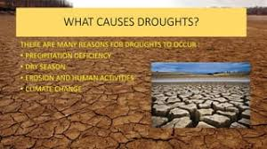

Causes of Drought
Droughts are caused by a combination of natural and human factors, including climate patterns, deforestation, and overuse of water resources. Droughts are caused by a combination of natural and human-made factors, including: Natural causes: Weather patterns, changes in ocean temperatures, and the jet stream Human causes: Climate change, deforestation, intensive farming, population spikes, and high water demand upstream in rivers Human actions: Changes in land use and excessive water consumption can make drought conditions worse Droughts can lead to a number of consequences, including: Agricultural drought: A lack of moisture can harm crops and other natural plant growth Hydrological drought: A deficiency in surface and sub-surface water can lead to water shortages Wildfires: Droughts can be a precursor to wildfires Famine: A lack of water resources can prevent crops from growing, which can lead to famine Disease outbreaks: Droughts can increase the risk of infectious diseases like pneumonia, diarrhea, and cholera Developing countries are more vulnerable to the socio-economic effects of drought.
.jpeg)
Human causes of drought Climate change: Global warming makes extreme weather more likely. It can make places drier by increasing evaporation. When land becomes so dry, an impermeable crust forms, so when it does rain, water runs off the surface, meaning sometimes flash flooding occurs. Deforestation: Plants and trees capture and release water into the atmosphere, which creates clouds and then rain. Scientists have observed a relationship between deforestation and drought. Agriculture: Intensive farming contributes to deforestation in the first instance but can also affect the absorbency of the soil, meaning it dries out much more quickly. High water demand: There are several reasons water demand might outweigh the supply, including intensive agriculture and population spikes. Also, high demand upstream in rivers (for dams or irrigation) can cause drought in lower, downstream areas.

Other natural causes of drought
Changes in ocean temperatures: El Niño and La Niña are climate patterns that can cause drought in some parts of the world. El Niño is characterized by warmer-than-average ocean temperatures in the Pacific Ocean, which can lead to drought in the southwestern United States and southern Africa. La Niña is characterized by cooler-than-average ocean temperatures in the Pacific Ocean, which can lead to drought in Australia and Indonesia.
The jet stream: The jet stream is a band of strong winds that flows high in the atmosphere. Changes in the jet stream can cause drought in some areas by bringing in dry air from other parts of the world.
How are people impacted by drought?
Risk of famine
Drought causes food insecurity when crops fail. When a substantial part of the population can no longer access food this is known as famine and results in widespread acute malnutrition, disease and death across the affected region.
East Africa is currently experiencing widespread food shortages and near-famine, with millions of children under 5 suffering from severe acute malnutrition.
.jpeg)